Navigateur d'entreprise Zero Trust · base Chromium · issu du rachat de Talon (annoncé en nov. 2023) · nom officiel Prisma Browser (ex-Prisma Access Browser)
Qu'est-ce que le Prisma Browser ? Un navigateur d'entreprise basé sur Chromium, intégrant nativement le Zero Trust, la DLP, la prévention des menaces et les contrôles de sécurité · directement dans la couche navigateur. Il remplace le besoin d'agent VPN pour les accès web, permet de sécuriser les appareils non-gérés (BYOD, contractants) et s'intègre nativement avec Prisma Access et le Strata Cloud Manager.
Nouveautés 2026 : connexion RDP et SSH native dans le navigateur, via Prisma Access ou le Prisma Browser Connector, comprise dans la licence (présentation Palo Alto Networks, mai 2026) ; avec PAN-OS 12.2 « Ceres » (juillet 2026), le NGFW voit l'activité du navigateur sans déchiffrement et réutilise ses politiques ; intégration native à Cortex depuis Cortex XDR 5.2 (juillet 2026) ; Prisma Browser for Business pour les PME (mars 2026).
Architecture · Comment ça fonctionne
Utilisateur Managed / BYOD
Prisma Browser Chromium + Zero Trust
Prisma Access PoP 150+ mondiaux
SaaS / Apps privées M365, Salesforce, etc.
Cas d'usage principaux
BYOD / Appareils non-gérés
Sécurise l'accès aux apps SaaS et privées depuis les appareils personnels sans installer d'agent MDM. Pas de VPN requis · le navigateur est le périmètre de sécurité.
Contractants & Third Parties
Accès sécurisé pour prestataires et partenaires sans donner accès au réseau d'entreprise. Isolation complète et politiques de data protection renforcées.

VDI / Sessions distantes
Alternative légère aux VDI coûteux pour les travailleurs à distance ne nécessitant qu'un accès web/SaaS. Réduit significativement les coûts d'infrastructure.
Apps critiques & Data sensibles
Prévention de l'exfiltration de données (copier/coller, impression, téléchargement) sur les apps métiers critiques. Watermarking et enregistrement de session optionnel.
Remplacement VPN Web
Pour les utilisateurs n'accédant qu'à des ressources web : Prisma Browser remplace le client VPN et offre une expérience utilisateur supérieure avec une sécurité plus granulaire.
Environnements OT / Kiosques
Sécurisation des postes partagés, kiosques industriels et environnements OT/ICS avec navigation contrôlée et isolation des sessions utilisateurs.
Capacités de sécurité intégrées
Capacité
Disponibilité
Description
Prévention des menaces
Anti-phishing (browser-native)
Inclus
Détection phishing et sites malveillants en temps réel, sans proxy externe
WildFire · Sandbox fichiers
Inclus
Analyse sandboxing des téléchargements via WildFire cloud (intégration native PAN)
Blocage extensions malveillantes
Inclus
Contrôle centralisé des extensions Chrome autorisées · politique par groupe
URL Filtering (PAN-DB)
Inclus
Catégorisation et filtrage des URLs via la base PAN-DB (Advanced URL Filtering)
Isolation web (Remote Browser Isolation)
Add-on
Isolation complète des sessions de navigation pour les sites à risque élevé
Contrôle des données (DLP)
Prévention copier/coller
Inclus
Contrôle granulaire copier/coller entre apps · par direction, par type de données
Blocage impression
Inclus
Empêche l'impression de documents confidentiels depuis les apps web
Contrôle uploads / downloads
Inclus
Politiques granulaires par app, domaine, type de fichier et direction
Watermarking dynamique
Inclus
Superposition de filigrane invisible sur pages sensibles · inclut username, date, IP
Prévention screenshots
Inclus
Blocage OS-level des captures d'écran sur les apps configurées
Enterprise DLP inline
Inclus
Inspection avancée du contenu : regex, classificateurs ML, empreintes. Incluse dans les trois éditions ; l'extension aux applications lourdes (Outlook, Teams…) relève de l'édition Pro
Visibilité & Contrôle
Enregistrement de session (audit)
Inclus
Audit complet des activités web · logs centralisés dans Strata Cloud Manager
Accès conditionnel (device posture)
Inclus
Vérification continue de la conformité de l'appareil avant chaque accès (ZTNA 2.0)
Intégration IdP (SAML / OIDC)
Inclus
Authentification SSO via Azure AD, Okta, Ping, ADFS, etc.
Gestion centralisée (SCM)
Inclus
Configuration et monitoring via Strata Cloud Manager · politiques par groupe/user
Playback vidéo session
Option
Replay complet des sessions utilisateurs à des fins d'investigation forensique
Compatibilité OS & Déploiement
Plate-forme
Support
Méthode de déploiement
Notes
Windows 10 / 11
Supporté
MSI via Intune, SCCM, GPO, manuel
Managé et BYOD
macOS
Supporté
PKG via Jamf, MDM, manuel
Managé et BYOD
Linux
Supporté
Paquet, MDM
Poste de travail Linux
ChromeOS
Supporté
Prisma Browser Mobile, gestion Google Admin
Chromebook
iOS et iPadOS
Supporté
Prisma Browser Mobile via MDM
Une édition dédiée existe pour Microsoft Intune
Android
Supporté
Prisma Browser Mobile via MDM
Une édition dédiée existe pour Microsoft Intune
Extension navigateur
Disponible
Chrome, Edge, Safari, Chrome sur ChromeOS
Capacités réduites face au navigateur complet
Prisma Browser vs alternatives
Critère
Prisma Browser
VPN + Chrome standard
VDI/DaaS
Agent requis sur endpoint
Navigateur seul
Agent VPN + navigateur
Client VDI + réseau
Accès BYOD sécurisé
Natif
Limité / risqué
Partiel
DLP dans le navigateur
Natif
Proxy externe requis
Centralisé côté DC
Zero Trust granulaire
ZTNA 2.0 natif
Réseau only
Périmètre VDI
Coût infrastructure
Faible (SaaS)
Moyen
Élevé (serveurs VDI)
Expérience utilisateur
Navigateur standard
Ralentissements VPN
Latence VDI
Gestion centralisée
SCM (cloud)
Outils séparés
Console VDI dédiée
Éditions · Education / Core / Pro
Modèle de licence : abonnement annuel par utilisateur. Trois éditions, toutes avec le navigateur sécurisé et le Standard Support Plan, administrées depuis Strata Cloud Manager. Prisma Browser se souscrit seul ou en add-on de Prisma Access (Core ou Pro) ; l'édition Enterprise de Prisma Access inclut Prisma Browser Core. Selon le guide de licences Prisma Access de juin 2026, l'édition Pro ajoute une DLP avancée étendue aux applications lourdes, la gestion des credentials Idira, l'accès natif aux applications privées et le RUM d'ADEM. Depuis mars 2026, Prisma Browser for Business vise les PME, sans prérequis d'autre produit Palo Alto Networks. Pour un devis, contacter Exclusive Networks.
Capacite
Education
Core
Pro
Navigateur securise
Enterprise Browser (Internet / SaaS)
SWG (Secure Web Gateway)
Enterprise DLP
AI Access Security (controle des apps GenAI)
Management Console (SCM)
Standard Support Plan
Acces aux apps privees (PRO uniquement)
Acces ZTNA aux apps privees (RDP, SSH, web) sans VPN
—
—
Prisma Browser Connector (region cloud optimale)
—
—
NGFW Connector (via PAN-OS >= 12.1.5 / Panorama)
—
—
Connexion RDP / SSH native dans le navigateur (sans traduction HTML, sans add-on)
—
—
Protection avancee (PRO uniquement)
Advanced Web Protection (AWP / AXS / ABP)
—
—
Advanced Data Protection (Prisma Browser Beyond)
—
—
Advanced Identity Protection (Account Protection / Web PAM, credentials Idira)
—
—
ADEM RUM (Real User Monitoring)
—
—
Connectivite supplementaire (options PRO)
Service Connection
—
—
Option
ZTNA Connector
—
—
Option
Colo Connect
—
—
Option
Detail des capacites PRO
Advanced Web Protection (AWP / AXS / ABP)
Inspection en temps reel du contenu et des scripts pendant l'execution de la page. AXS surveille les extensions du navigateur, ABP bloque les menaces zero-day post-chargement (phishing masque, code genere par IA). Mecanisme exact (signatures vs comportement) a confirmer.
Advanced Data Protection (Browser Beyond)
Etend les controles anti-exfiltration au-dela du navigateur : protection des logiciels installes sur le poste (Outlook, Slack, Excel, Teams) contre les fuites de donnees.
Advanced Identity Protection (Web PAM)
Securise les applications hors SSO et les comptes partages. Les mots de passe sont geres centralement et jamais visibles par l'utilisateur final (Account Protection).
ADEM RUM (Real User Monitoring)
Mesure de l'experience utilisateur reelle directement depuis le navigateur (latence, temps de chargement, qualite de connexion). Donnees remontees dans Strata Cloud Manager.
Points clés à retenir
Origine : Talon (2023)
Palo Alto Networks a racheté Talon Cyber Security (annonce de novembre 2023, environ 625 M$ selon la presse). La technologie est devenue Prisma Access Browser, puis Prisma Browser.
Chromium · pas Chrome
Basé sur Chromium open-source (même base que Chrome/Edge), compatible avec les extensions Chrome managées. Les utilisateurs retrouvent leur environnement familier.
Zéro changement utilisateur
L'interface est identique à Chrome. Les politiques de sécurité s'appliquent de manière transparente. Pas de formation spécifique requise pour les end-users.
Intégration native PAN
Logs natifs dans SCM ; intégration native à la plateforme Cortex depuis Cortex XDR 5.2 (juillet 2026). Politiques partagées avec Prisma Access. Authentication unifiée avec l'IdP existant. Pas de stack sécurité séparé.
Vérification device continue
ZTNA 2.0 : contrôle de la posture de l'appareil à chaque requête (pas seulement à la connexion). Révocation automatique si la conformité change en cours de session.
Prisma Browser vs GlobalProtect
GP = accès réseau complet (network-centric VPN). Prisma Browser = accès centré navigateur : web, SaaS et, en édition Pro, applications privées dont RDP et SSH (browser-centric Zero Trust). Les deux sont complémentaires selon les profils utilisateurs.